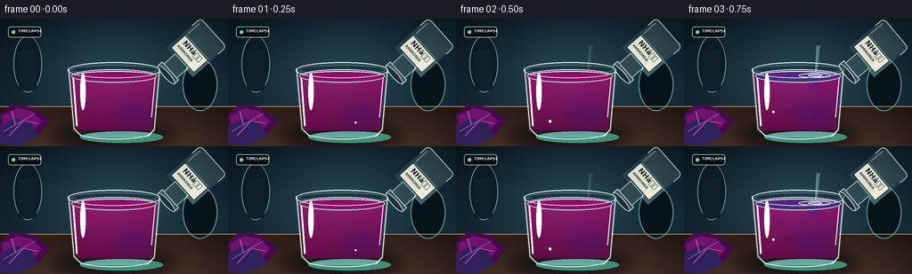

CODING AGENTS AS PIXEL WORLD MODELS
traex/GPT-5.6-Sol · material_0032
点击播放 · 原生 RGB 像素
逐轮保存的候选
回放视频、检查图与代码变化。
每份候选均可单独播放。实际图片检查记录在下方工具轨迹中。
候选 01播放与检查图
点击播放 · 原生 RGB 像素

展开代码变化
--- 上一保存版本
+++ 本次保存版本
@@ -0,0 +1,232 @@
+import math
+from pathlib import Path
+import numpy as np
+from PIL import Image, ImageDraw, ImageFont, ImageFilter
+import artifact_io
+
+W,H,N = 256,144,20
+S=3
+w,h=W*S,H*S
+ROOT=Path(__file__).resolve().parent
+
+def sc(v): return int(round(v*S))
+def pts(arr): return [(sc(x),sc(y)) for x,y in arr]
+def clamp(x,a=0,b=1): return max(a,min(b,x))
+def smooth(x):
+ x=clamp(x); return x*x*(3-2*x)
+
+def font(size,bold=False):
+ p='/usr/share/fonts/truetype/dejavu/DejaVuSans-Bold.ttf' if bold else '/usr/share/fonts/truetype/dejavu/DejaVuSans.ttf'
+ return ImageFont.truetype(p,sc(size))
+
+# deterministic photographic background
+rng=np.random.default_rng(32041)
+Y,X=np.mgrid[0:h,0:w]
+yn=Y/(h-1); xn=X/(w-1)
+base=np.zeros((h,w,3),dtype=np.float32)
+# cool laboratory wall
+base[:,:,0]=14+14*yn+3*xn
+base[:,:,1]=29+20*yn+8*xn
+base[:,:,2]=38+23*yn+10*xn
+# soft pool of light behind subject
+halo=np.exp(-(((xn-.49)/.48)**2+((yn-.38)/.55)**2)*2.0)
+base += halo[:,:,None]*np.array([21,28,30])
+# tabletop from y=99 onward
+hy=sc(99)
+ty=(Y-hy)/max(1,h-hy)
+wood=np.zeros_like(base)
+wood[:,:,0]=44+31*ty+8*np.sin(X/75)
+wood[:,:,1]=31+22*ty+5*np.sin(X/75)
+wood[:,:,2]=28+17*ty+3*np.sin(X/75)
+base[hy:]=wood[hy:]
+# vignette + fine grain
+vig=1-0.28*np.clip(((xn-.5)/.73)**2+((yn-.48)/.82)**2,0,1)
+base*=vig[:,:,None]
+noise=rng.normal(0,1.2,(h,w,1))
+base=np.clip(base+noise,0,255).astype(np.uint8)
+
+# reusable cup liquid mask at superscale
+liq_mask=np.zeros((h,w),dtype=np.float32)
+# cup tapers toward bottom: inside centered 128
+for yy in range(sc(63),sc(126)):
+ yf=yy/S
+ half=49.0-(yf-63)*0.095
+ xl=sc(128-half); xr=sc(128+half)
+ liq_mask[yy,xl:xr]=1
+# soften edges
+liq_mask=np.asarray(Image.fromarray((liq_mask*255).astype('uint8')).filter(ImageFilter.GaussianBlur(sc(.5))))/255.0
+
+frames=[]
+for fi in range(N):
+ t=fi/(N-1)
+ im=Image.fromarray(base.copy(),'RGB').convert('RGBA')
+ d=ImageDraw.Draw(im,'RGBA')
+
+ # out-of-focus lab glass silhouettes, adding depth
+ d.ellipse((sc(15),sc(19),sc(47),sc(83)),fill=(15,31,40,80),outline=(114,152,158,27),width=sc(1))
+ d.rectangle((sc(21),sc(37),sc(41),sc(81)),fill=(18,37,45,60))
+ d.ellipse((sc(205),sc(45),sc(244),sc(104)),fill=(10,24,31,50),outline=(111,164,163,22),width=sc(1))
+ # bokeh lights
+ glow=Image.new('RGBA',(w,h),(0,0,0,0)); gd=ImageDraw.Draw(glow,'RGBA')
+ for cx,cy,rr,col in [(52,25,9,(102,181,169,35)),(219,31,13,(73,139,151,25)),(186,72,8,(146,198,166,18))]:
+ gd.ellipse((sc(cx-rr),sc(cy-rr),sc(cx+rr),sc(cy+rr)),fill=col)
+ glow=glow.filter(ImageFilter.GaussianBlur(sc(7))); im=Image.alpha_composite(im,glow); d=ImageDraw.Draw(im,'RGBA')
+
+ # tabletop seam and reflected pool
+ d.line((0,sc(99),w,sc(99)),fill=(177,134,101,38),width=sc(1))
+ shadow=Image.new('RGBA',(w,h),(0,0,0,0)); sd=ImageDraw.Draw(shadow,'RGBA')
+ sd.ellipse((sc(57),sc(119),sc(198),sc(143)),fill=(0,3,7,145))
+ shadow=shadow.filter(ImageFilter.GaussianBlur(sc(7))); im=Image.alpha_composite(im,shadow); d=ImageDraw.Draw(im,'RGBA')
+ d.ellipse((sc(90),sc(127),sc(183),sc(140)),fill=(68,141,122,int(14+28*smooth((fi-4)/15))))
+
+ # cabbage leaves at lower left (context cue)
+ d.polygon(pts([(0,108),(13,96),(38,100),(57,114),(43,132),(14,137),(0,130)]),fill=(71,16,75,245))
+ d.polygon(pts([(3,109),(19,101),(35,104),(47,115),(36,128),(15,132),(2,126)]),fill=(111,23,111,230))
+ d.polygon(pts([(0,121),(17,112),(34,116),(43,132),(21,143),(0,140)]),fill=(51,36,94,235))
+ # leaf veins
+ d.line(pts([(4,127),(39,107)]),fill=(198,86,177,120),width=sc(1))
+ d.line(pts([(17,119),(13,104)]),fill=(197,91,177,90),width=sc(1))
+ d.line(pts([(26,115),(42,118)]),fill=(197,91,177,80),width=sc(1))
+ d.line(pts([(10,132),(25,116)]),fill=(158,91,187,80),width=sc(1))
+
+ # rear glass silhouette/refraction, before liquid
+ glassback=Image.new('RGBA',(w,h),(0,0,0,0)); g=ImageDraw.Draw(glassback,'RGBA')
+ g.polygon(pts([(76,56),(180,56),(174,126),(166,133),(91,133),(82,126)]),fill=(136,188,194,14),outline=(218,241,241,115))
+ g.ellipse((sc(76),sc(49),sc(180),sc(67)),fill=(130,177,184,18),outline=(232,247,245,165),width=sc(1))
+ g.ellipse((sc(80),sc(52),sc(176),sc(63)),fill=(12,31,38,70),outline=(180,218,218,75),width=sc(1))
+ im=Image.alpha_composite(im,glassback)
+
+ # Reaction timing: starts when stream reaches glass (frame 3), rich time-lapse evolution
+ p=smooth((fi-2)/15)
+ yy,xx=np.mgrid[0:h,0:w]
+ xf=xx/S; yf=yy/S
+ # Spatially varied mixing front with curled ammonia plume from impact point
+ plume_depth=66 + 67*clamp((fi-2)/11)
+ center=147 + 8*np.sin((yf-62)*.17 + fi*.52) * np.clip((yf-62)/58,0,1)
+ plume=np.exp(-((xf-center)/(4.2+0.12*np.maximum(yf-63,0)))**2) * np.clip((plume_depth-yf)/15+0.5,0,1)
+ eddy1=np.exp(-(((xf-(123+10*np.sin(fi*.34)))/24)**2+((yf-(88+fi*1.3))/18)**2))
+ eddy2=np.exp(-(((xf-(153-7*np.sin(fi*.4)))/28)**2+((yf-(108-fi*.45))/16)**2))
+ wav=.09*np.sin(xf*.16+yf*.12+fi*.63)+.055*np.sin(xf*.31-yf*.19-fi*.38)
+ q=np.clip(p*1.13 + .47*plume + .18*eddy1*p + .12*eddy2 + wav*p,0,1)
+ # Keep the far lower left purple slightly longer, realistic mixing
+ q=np.clip(q - .12*np.exp(-(((xf-96)/20)**2+((yf-118)/17)**2))*(1-p),0,1)
+ # Indicator color path: magenta-purple -> royal blue -> cyan-teal -> vivid green
+ stops=np.array([[139,20,103],[91,25,133],[32,65,150],[15,130,143],[45,165,96]],dtype=float)
+ pos=np.array([0,.24,.48,.72,1.0])
+ rgb=np.empty((h,w,3),dtype=float)
+ for k in range(4):
+ f=np.clip((q-pos[k])/(pos[k+1]-pos[k]),0,1)
+ choose=(q>=pos[k])&(q<=pos[k+1])
+ mix=stops[k][None,None,:]*(1-f[:,:,None])+stops[k+1][None,None,:]*f[:,:,None]
+ rgb[choose]=mix[choose]
+ rgb[q<0]=stops[0]; rgb[q>1]=stops[-1]
+ # liquid depth shading and luminous central translucency
+ depth=np.clip((yf-63)/67,0,1)
+ rgb*= (1.04-.33*depth)[:,:,None]
+ rgb += (9*np.exp(-((xf-119)/42)**2)*(1-depth))[:,:,None]
+ alpha=(liq_mask*236).astype(np.uint8)
+ liquid=np.dstack([np.clip(rgb,0,255).astype(np.uint8),alpha])
+ im=Image.alpha_composite(im,Image.fromarray(liquid,'RGBA'))
+ d=ImageDraw.Draw(im,'RGBA')
+
+ # soft curling streaks inside the transforming liquid
+ swirl=Image.new('RGBA',(w,h),(0,0,0,0)); sw=ImageDraw.Draw(swirl,'RGBA')
+ if fi>=3:
+ a=int(35+35*(1-p))
+ path=[]
+ maxy=min(125,66+(fi-2)*6.4)
+ for y0 in np.linspace(66,maxy,45):
+ x0=147+8*math.sin((y0-63)*.17+fi*.52)*(y0-63)/62
+ path.append((sc(x0),sc(y0)))
+ if len(path)>1: sw.line(path,fill=(77,226,185,a),width=sc(2))
+ sw.arc((sc(91),sc(75),sc(158),sc(113)),10,154,fill=(111,205,185,int(25*p)),width=sc(2))
+ sw.arc((sc(117),sc(91),sc(177),sc(128)),170,345,fill=(25,92,181,int(24*(1-p)+12)),width=sc(2))
+ swirl=swirl.filter(ImageFilter.GaussianBlur(sc(1.8)))
+ im=Image.alpha_composite(im,swirl); d=ImageDraw.Draw(im,'RGBA')
+
+ # liquid surface: reflective ellipse and visible color transition
+ surfq=clamp(p*1.18 + (0.24 if fi>=3 else 0))
+ if surfq<.5:
+ f=surfq/.5; c=tuple(int((1-f)*stops[0,j]+f*stops[2,j]) for j in range(3))
+ else:
+ f=(surfq-.5)/.5; c=tuple(int((1-f)*stops[2,j]+f*stops[4,j]) for j in range(3))
+ d.ellipse((sc(80),sc(57),sc(176),sc(72)),fill=(*c,235),outline=(197,234,226,80),width=sc(1))
+ d.arc((sc(83),sc(59),sc(173),sc(69)),184,350,fill=(255,255,255,72),width=sc(1))
+ # impact ripples
+ if 3<=fi<=16:
+ ph=(fi*1.9)%5
+ for j in range(2):
+ rr=4+ph+j*6
+ d.ellipse((sc(147-rr*1.7),sc(64-rr*.25),sc(147+rr*1.7),sc(64+rr*.25)),outline=(218,252,236,max(12,75-j*22-int(ph*7))),width=sc(1))
+
+ # bubbles and highlights in glass
+ brng=np.random.default_rng(900+fi)
+ nb=max(1,fi//2)
+ for bi in range(nb):
+ bx=91+brng.random()*72; by=72+brng.random()*48
+ r=.65+brng.random()*1.25
+ d.ellipse((sc(bx-r),sc(by-r),sc(bx+r),sc(by+r)),outline=(224,250,231,90),fill=(255,255,255,10),width=sc(.6))
+ # glass wall, rim and base highlights
+ d.line(pts([(77,56),(83,124),(91,132)]),fill=(237,251,249,155),width=sc(1))
+ d.line(pts([(179,56),(173,125),(166,132)]),fill=(231,250,247,142),width=sc(1))
+ d.line(pts([(82,67),(86,121)]),fill=(255,255,255,48),width=sc(2))
+ d.line(pts([(174,67),(170,111)]),fill=(255,255,255,34),width=sc(1))
+ d.arc((sc(89),sc(123),sc(168),sc(136)),4,176,fill=(218,245,240,115),width=sc(1))
+ d.arc((sc(76),sc(49),sc(180),sc(67)),180,359,fill=(255,255,255,205),width=sc(1))
+ d.arc((sc(76),sc(50),sc(180),sc(67)),0,180,fill=(175,220,219,115),width=sc(1))
+ d.ellipse((sc(90),sc(61),sc(96),sc(103)),fill=(255,255,255,24))
+
+ # pouring stream appears before vessel, subtly wobbles
+ pour=smooth((fi-1)/3)*(1-smooth((fi-15)/3))
+ if pour>0.02:
+ stream=Image.new('RGBA',(w,h),(0,0,0,0)); st=ImageDraw.Draw(stream,'RGBA')
+ sx=150+math.sin(fi*.8)*1.1
+ # narrow translucent stream from spout to surface
+ poly=[(sx-2.0,30),(sx+2.1,30),(148.8+math.sin(fi*.8),61.5),(145.6+math.sin(fi*.8),61.5)]
+ st.polygon(pts(poly),fill=(211,244,235,int(92*pour)))
+ st.line(pts([(sx-1.2,31),(147.1+math.sin(fi*.8),61)]),fill=(255,255,255,int(185*pour)),width=sc(.7))
+ st.line(pts([(sx+1.8,31),(149+math.sin(fi*.8),60)]),fill=(108,190,185,int(80*pour)),width=sc(.7))
+ stream=stream.filter(ImageFilter.GaussianBlur(sc(.35)))
+ im=Image.alpha_composite(im,stream)
+
+ # Tilted ammonia reagent bottle/beaker at top-right. Slight motion reinforces timelapse pour.
+ # Draw in local canvas upright, then rotate so mouth points down-left.
+ vessel=Image.new('RGBA',(sc(94),sc(92)),(0,0,0,0)); vd=ImageDraw.Draw(vessel,'RGBA')
+ # bottle body / shoulder / neck with clear solution
+ vd.rounded_rectangle((sc(28),sc(4),sc(72),sc(55)),radius=sc(5),fill=(173,211,207,40),outline=(231,248,244,180),width=sc(1))
+ vd.polygon(pts([(28,17),(72,17),(72,55),(28,55)]),fill=(135,199,194,35))
+ vd.rectangle((sc(39),sc(52),sc(61),sc(73)),fill=(167,211,205,35),outline=(230,246,242,170),width=sc(1))
+ vd.rectangle((sc(36),sc(69),sc(64),sc(76)),fill=(182,217,210,45),outline=(241,252,248,190),width=sc(1))
+ vd.ellipse((sc(36),sc(72),sc(64),sc(79)),fill=(20,42,48,120),outline=(245,254,250,205),width=sc(1))
+ # liquid line within bottle
+ vd.rectangle((sc(30),sc(11),sc(70),sc(29)),fill=(204,235,226,38))
+ vd.line((sc(31),sc(29),sc(69),sc(29)),fill=(244,255,250,100),width=sc(1))
+ # large readable label
+ vd.rounded_rectangle((sc(31),sc(30),sc(69),sc(51)),radius=sc(1.5),fill=(238,235,217,238),outline=(42,65,63,190),width=sc(.7))
+ vd.text((sc(36),sc(31)),"NHâ",font=font(8,True),fill=(24,46,44,255))
+ vd.text((sc(34),sc(41)),"AMMONIA",font=font(4.2,True),fill=(41,64,61,255))
+ # glass highlights
+ vd.line((sc(32),sc(9),sc(32),sc(26)),fill=(255,255,255,120),width=sc(1))
+ angle=-(48 + 3*pour) # clockwise visual tilt in PIL
+ vessel=vessel.rotate(angle,resample=Image.Resampling.BICUBIC,expand=True)
+ # mouth positioned near stream origin; animate tiny settle after pour
+ px=sc(138 + (1-pour)*3 + smooth((fi-15)/4)*15)
+ py=sc(-25 - smooth((fi-15)/4)*5)
+ im.alpha_composite(vessel,(px,py))
+
+ # subtle timestamp-like timelapse aesthetic, unobtrusive
+ d=ImageDraw.Draw(im,'RGBA')
+ d.rounded_rectangle((sc(9),sc(9),sc(46),sc(21)),radius=sc(3),fill=(4,15,19,125),outline=(177,220,213,45),width=sc(.6))
+ d.ellipse((sc(13),sc(13),sc(17),sc(17)),fill=(95,224,180,220))
+ d.text((sc(20),sc(11)),"TIMELAPSE",font=font(4.4,True),fill=(220,239,233,210))
+
+ # downsample for clean antialiasing and mild photographic finish
+ im=im.convert('RGB').resize((W,H),Image.Resampling.LANCZOS)
+ arr=np.asarray(im).astype(np.float32)
+ # tiny contrast curve
+ arr=(arr-128)*1.035+128
+ frames.append(np.clip(arr,0,255).astype(np.uint8))
+
+frames=np.stack(frames,axis=0)
+artifact_io.save(frames,ROOT)
+print('saved',frames.shape,frames.dtype)
候选 02播放与检查图
点击播放 · 原生 RGB 像素

展开代码变化
--- 上一保存版本
+++ 本次保存版本
@@ -203,7 +203,7 @@
vd.line((sc(31),sc(29),sc(69),sc(29)),fill=(244,255,250,100),width=sc(1))
# large readable label
vd.rounded_rectangle((sc(31),sc(30),sc(69),sc(51)),radius=sc(1.5),fill=(238,235,217,238),outline=(42,65,63,190),width=sc(.7))
- vd.text((sc(36),sc(31)),"NHâ",font=font(8,True),fill=(24,46,44,255))
+ vd.text((sc(36),sc(31)),"NH3",font=font(8,True),fill=(24,46,44,255))
vd.text((sc(34),sc(41)),"AMMONIA",font=font(4.2,True),fill=(41,64,61,255))
# glass highlights
vd.line((sc(32),sc(9),sc(32),sc(26)),fill=(255,255,255,120),width=sc(1))
候选 03播放与检查图
可观测工具轨迹
实际执行的命令与返回图片。
命令 1exit 0
/bin/bash -lc "cat prompt.txt && printf '\\n---RULES---\\n' && cat GENERATION_RULES.md && printf '\\n---SPEC---\\n' && cat task_spec.json"
命令 2exit 0
/bin/bash -lc "find . -maxdepth 2 -type f -printf '%p\\n' | sort && printf '\\nTOOLS\\n' && command -v ffmpeg || true && command -v python3 || true"
命令 3exit 0
/bin/bash -lc 'cat artifact_io.py'
命令 4exit 0
/bin/bash -lc "cat > generate.py <<'PY'
import math
from pathlib import Path
import numpy as np
from PIL import Image, ImageDraw, ImageFont, ImageFilter
import artifact_io
W,H,N = 256,144,20
S=3
w,h=W*S,H*S
ROOT=Path(__file__).resolve().parent
def sc(v): return int(round(v*S))
def pts(arr): return [(sc(x),sc(y)) for x,y in arr]
def clamp(x,a=0,b=1): return max(a,min(b,x))
def smooth(x):
x=clamp(x); return x*x*(3-2*x)
def font(size,bold=False):
p='/usr/share/fonts/truetype/dejavu/DejaVuSans-Bold.ttf' if bold else '/usr/share/fonts/truetype/dejavu/DejaVuSans.ttf'
return ImageFont.truetype(p,sc(size))
# deterministic photographic background
rng=np.random.default_rng(32041)
Y,X=np.mgrid[0:h,0:w]
yn=Y/(h-1); xn=X/(w-1)
base=np.zeros((h,w,3),dtype=np.float32)
# cool laboratory wall
base[:,:,0]=14+14*yn+3*xn
base[:,:,1]=29+20*yn+8*xn
base[:,:,2]=38+23*yn+10*xn
# soft pool of light behind subject
halo=np.exp(-(((xn-.49)/.48)**2+((yn-.38)/.55)**2)*2.0)
base += halo[:,:,None]*np.array([21,28,30])
# tabletop from y=99 onward
hy=sc(99)
ty=(Y-hy)/max(1,h-hy)
wood=np.zeros_like(base)
wood[:,:,0]=44+31*ty+8*np.sin(X/75)
wood[:,:,1]=31+22*ty+5*np.sin(X/75)
wood[:,:,2]=28+17*ty+3*np.sin(X/75)
base[hy:]=wood[hy:]
# vignette + fine grain
vig=1-0.28*np.clip(((xn-.5)/.73)**2+((yn-.48)/.82)**2,0,1)
base*=vig[:,:,None]
noise=rng.normal(0,1.2,(h,w,1))
base=np.clip(base+noise,0,255).astype(np.uint8)
# reusable cup liquid mask at superscale
liq_mask=np.zeros((h,w),dtype=np.float32)
# cup tapers toward bottom: inside centered 128
for yy in range(sc(63),sc(126)):
yf=yy/S
half=49.0-(yf-63)*0.095
xl=sc(128-half); xr=sc(128+half)
liq_mask[yy,xl:xr]=1
# soften edges
liq_mask=np.asarray(Image.fromarray((liq_mask*255).astype('uint8')).filter(ImageFilter.GaussianBlur(sc(.5))))/255.0
frames=[]
for fi in range(N):
t=fi/(N-1)
im=Image.fromarray(base.copy(),'RGB').convert('RGBA')
d=ImageDraw.Draw(im,'RGBA')
# out-of-focus lab glass silhouettes, adding depth
d.ellipse((sc(15),sc(19),sc(47),sc(83)),fill=(15,31,40,80),outline=(114,152,158,27),width=sc(1))
d.rectangle((sc(21),sc(37),sc(41),sc(81)),fill=(18,37,45,60))
d.ellipse((sc(205),sc(45),sc(244),sc(104)),fill=(10,24,31,50),outline=(111,164,163,22),width=sc(1))
# bokeh lights
glow=Image.new('RGBA',(w,h),(0,0,0,0)); gd=ImageDraw.Draw(glow,'RGBA')
for cx,cy,rr,col in [(52,25,9,(102,181,169,35)),(219,31,13,(73,139,151,25)),(186,72,8,(146,198,166,18))]:
gd.ellipse((sc(cx-rr),sc(cy-rr),sc(cx+rr),sc(cy+rr)),fill=col)
glow=glow.filter(ImageFilter.GaussianBlur(sc(7))); im=Image.alpha_composite(im,glow); d=ImageDraw.Draw(im,'RGBA')
# tabletop seam and reflected pool
d.line((0,sc(99),w,sc(99)),fill=(177,134,101,38),width=sc(1))
shadow=Image.new('RGBA',(w,h),(0,0,0,0)); sd=ImageDraw.Draw(shadow,'RGBA')
sd.ellipse((sc(57),sc(119),sc(198),sc(143)),fill=(0,3,7,145))
shadow=shadow.filter(ImageFilter.GaussianBlur(sc(7))); im=Image.alpha_composite(im,shadow); d=ImageDraw.Draw(im,'RGBA')
d.ellipse((sc(90),sc(127),sc(183),sc(140)),fill=(68,141,122,int(14+28*smooth((fi-4)/15))))
# cabbage leaves at lower left (context cue)
d.polygon(pts([(0,108),(13,96),(38,100),(57,114),(43,132),(14,137),(0,130)]),fill=(71,16,75,245))
d.polygon(pts([(3,109),(19,101),(35,104),(47,115),(36,128),(15,132),(2,126)]),fill=(111,23,111,230))
d.polygon(pts([(0,121),(17,112),(34,116),(43,132),(21,143),(0,140)]),fill=(51,36,94,235))
# leaf veins
d.line(pts([(4,127),(39,107)]),fill=(198,86,177,120),width=sc(1))
d.line(pts([(17,119),(13,104)]),fill=(197,91,177,90),width=sc(1))
d.line(pts([(26,115),(42,118)]),fill=(197,91,177,80),width=sc(1))
d.line(pts([(10,132),(25,116)]),fill=(158,91,187,80),width=sc(1))
# rear glass silhouette/refraction, before liquid
glassback=Image.new('RGBA',(w,h),(0,0,0,0)); g=ImageDraw.Draw(glassback,'RGBA')
g.polygon(pts([(76,56),(180,56),(174,126),(166,133),(91,133),(82,126)]),fill=(136,188,194,14),outline=(218,241,241,115))
g.ellipse((sc(76),sc(49),sc(180),sc(67)),fill=(130,177,184,18),outline=(232,247,245,165),width=sc(1))
g.ellipse((sc(80),sc(52),sc(176),sc(63)),fill=(12,31,38,70),outline=(180,218,218,75),width=sc(1))
im=Image.alpha_composite(im,glassback)
# Reaction timing: starts when stream reaches glass (frame 3), rich time-lapse evolution
p=smooth((fi-2)/15)
yy,xx=np.mgrid[0:h,0:w]
xf=xx/S; yf=yy/S
# Spatially varied mixing front with curled ammonia plume from impact point
plume_depth=66 + 67*clamp((fi-2)/11)
center=147 + 8*np.sin((yf-62)*.17 + fi*.52) * np.clip((yf-62)/58,0,1)
plume=np.exp(-((xf-center)/(4.2+0.12*np.maximum(yf-63,0)))**2) * np.clip((plume_depth-yf)/15+0.5,0,1)
eddy1=np.exp(-(((xf-(123+10*np.sin(fi*.34)))/24)**2+((yf-(88+fi*1.3))/18)**2))
eddy2=np.exp(-(((xf-(153-7*np.sin(fi*.4)))/28)**2+((yf-(108-fi*.45))/16)**2))
wav=.09*np.sin(xf*.16+yf*.12+fi*.63)+.055*np.sin(xf*.31-yf*.19-fi*.38)
q=np.clip(p*1.13 + .47*plume + .18*eddy1*p + .12*eddy2 + wav*p,0,1)
# Keep the far lower left purple slightly longer, realistic mixing
q=np.clip(q - .12*np.exp(-(((xf-96)/20)**2+((yf-118)/17)**2))*(1-p),0,1)
# Indicator color path: magenta-purple -> royal blue -> cyan-teal -> vivid green
stops=np.array([[139,20,103],[91,25,133],[32,65,150],[15,130,143],[45,165,96]],dtype=float)
pos=np.array([0,.24,.48,.72,1.0])
rgb=np.empty((h,w,3),dtype=float)
for k in range(4):
f=np.clip((q-pos[k])/(pos[k+1]-pos[k]),0,1)
choose=(q>=pos[k])&(q<=pos[k+1])
mix=stops[k][None,None,:]*(1-f[:,:,None])+stops[k+1][None,None,:]*f[:,:,None]
rgb[choose]=mix[choose]
rgb[q<0]=stops[0]; rgb[q>1]=stops[-1]
# liquid depth shading and luminous central translucency
depth=np.clip((yf-63)/67,0,1)
rgb*= (1.04-.33*depth)[:,:,None]
rgb += (9*np.exp(-((xf-119)/42)**2)*(1-depth))[:,:,None]
alpha=(liq_mask*236).astype(np.uint8)
liquid=np.dstack([np.clip(rgb,0,255).astype(np.uint8),alpha])
im=Image.alpha_composite(im,Image.fromarray(liquid,'RGBA'))
d=ImageDraw.Draw(im,'RGBA')
# soft curling streaks inside the transforming liquid
swirl=Image.new('RGBA',(w,h),(0,0,0,0)); sw=ImageDraw.Draw(swirl,'RGBA')
if fi>=3:
a=int(35+35*(1-p))
path=[]
maxy=min(125,66+(fi-2)*6.4)
for y0 in np.linspace(66,maxy,45):
x0=147+8*math.sin((y0-63)*.17+fi*.52)*(y0-63)/62
path.append((sc(x0),sc(y0)))
if len(path)>1: sw.line(path,fill=(77,226,185,a),width=sc(2))
sw.arc((sc(91),sc(75),sc(158),sc(113)),10,154,fill=(111,205,185,int(25*p)),width=sc(2))
sw.arc((sc(117),sc(91),sc(177),sc(128)),170,345,fill=(25,92,181,int(24*(1-p)+12)),width=sc(2))
swirl=swirl.filter(ImageFilter.GaussianBlur(sc(1.8)))
im=Image.alpha_composite(im,swirl); d=ImageDraw.Draw(im,'RGBA')
# liquid surface: reflective ellipse and visible color transition
surfq=clamp(p*1.18 + (0.24 if fi>=3 else 0))
if surfq<.5:
f=surfq/.5; c=tuple(int((1-f)*stops[0,j]+f*stops[2,j]) for j in range(3))
else:
f=(surfq-.5)/.5; c=tuple(int((1-f)*stops[2,j]+f*stops[4,j]) for j in range(3))
d.ellipse((sc(80),sc(57),sc(176),sc(72)),fill=(*c,235),outline=(197,234,226,80),width=sc(1))
d.arc((sc(83),sc(59),sc(173),sc(69)),184,350,fill=(255,255,255,72),width=sc(1))
# impact ripples
if 3<=fi<=16:
ph=(fi*1.9)%5
for j in range(2):
rr=4+ph+j*6
d.ellipse((sc(147-rr*1.7),sc(64-rr*.25),sc(147+rr*1.7),sc(64+rr*.25)),outline=(218,252,236,max(12,75-j*22-int(ph*7))),width=sc(1))
# bubbles and highlights in glass
brng=np.random.default_rng(900+fi)
nb=max(1,fi//2)
for bi in range(nb):
bx=91+brng.random()*72; by=72+brng.random()*48
r=.65+brng.random()*1.25
d.ellipse((sc(bx-r),sc(by-r),sc(bx+r),sc(by+r)),outline=(224,250,231,90),fill=(255,255,255,10),width=sc(.6))
# glass wall, rim and base highlights
d.line(pts([(77,56),(83,124),(91,132)]),fill=(237,251,249,155),width=sc(1))
d.line(pts([(179,56),(173,125),(166,132)]),fill=(231,250,247,142),width=sc(1))
d.line(pts([(82,67),(86,121)]),fill=(255,255,255,48),width=sc(2))
d.line(pts([(174,67),(170,111)]),fill=(255,255,255,34),width=sc(1))
d.arc((sc(89),sc(123),sc(168),sc(136)),4,176,fill=(218,245,240,115),width=sc(1))
d.arc((sc(76),sc(49),sc(180),sc(67)),180,359,fill=(255,255,255,205),width=sc(1))
d.arc((sc(76),sc(50),sc(180),sc(67)),0,180,fill=(175,220,219,115),width=sc(1))
d.ellipse((sc(90),sc(61),sc(96),sc(103)),fill=(255,255,255,24))
# pouring stream appears before vessel, subtly wobbles
pour=smooth((fi-1)/3)*(1-smooth((fi-15)/3))
if pour>0.02:
stream=Image.new('RGBA',(w,h),(0,0,0,0)); st=ImageDraw.Draw(stream,'RGBA')
sx=150+math.sin(fi*.8)*1.1
# narrow translucent stream from spout to surface
poly=[(sx-2.0,30),(sx+2.1,30),(148.8+math.sin(fi*.8),61.5),(145.6+math.sin(fi*.8),61.5)]
st.polygon(pts(poly),fill=(211,244,235,int(92*pour)))
st.line(pts([(sx-1.2,31),(147.1+math.sin(fi*.8),61)]),fill=(255,255,255,int(185*pour)),width=sc(.7))
st.line(pts([(sx+1.8,31),(149+math.sin(fi*.8),60)]),fill=(108,190,185,int(80*pour)),width=sc(.7))
stream=stream.filter(ImageFilter.GaussianBlur(sc(.35)))
im=Image.alpha_composite(im,stream)
# Tilted ammonia reagent bottle/beaker at top-right. Slight motion reinforces timelapse pour.
# Draw in local canvas upright, then rotate so mouth points down-left.
vessel=Image.new('RGBA',(sc(94),sc(92)),(0,0,0,0)); vd=ImageDraw.Draw(vessel,'RGBA')
# bottle body / shoulder / neck with clear solution
vd.rounded_rectangle((sc(28),sc(4),sc(72),sc(55)),radius=sc(5),fill=(173,211,207,40),outline=(231,248,244,180),width=sc(1))
vd.polygon(pts([(28,17),(72,17),(72,55),(28,55)]),fill=(135,199,194,35))
vd.rectangle((sc(39),sc(52),sc(61),sc(73)),fill=(167,211,205,35),outline=(230,246,242,170),width=sc(1))
vd.rectangle((sc(36),sc(69),sc(64),sc(76)),fill=(182,217,210,45),outline=(241,252,248,190),width=sc(1))
vd.ellipse((sc(36),sc(72),sc(64),sc(79)),fill=(20,42,48,120),outline=(245,254,250,205),width=sc(1))
# liquid line within bottle
vd.rectangle((sc(30),sc(11),sc(70),sc(29)),fill=(204,235,226,38))
vd.line((sc(31),sc(29),sc(69),sc(29)),fill=(244,255,250,100),width=sc(1))
# large readable label
vd.rounded_rectangle((sc(31),sc(30),sc(69),sc(51)),radius=sc(1.5),fill=(238,235,217,238),outline=(42,65,63,190),width=sc(.7))
vd.text((sc(36),sc(31)),\"NHâ\",font=font(8,True),fill=(24,46,44,255))
vd.text((sc(34),sc(41)),\"AMMONIA\",font=font(4.2,True),fill=(41,64,61,255))
# glass highlights
vd.line((sc(32),sc(9),sc(32),sc(26)),fill=(255,255,255,120),width=sc(1))
angle=-(48 + 3*pour) # clockwise visual tilt in PIL
vessel=vessel.rotate(angle,resample=Image.Resampling.BICUBIC,expand=True)
# mouth positioned near stream origin; animate tiny settle after pour
px=sc(138 + (1-pour)*3 + smooth((fi-15)/4)*15)
py=sc(-25 - smooth((fi-15)/4)*5)
im.alpha_composite(vessel,(px,py))
# subtle timestamp-like timelapse aesthetic, unobtrusive
d=ImageDraw.Draw(im,'RGBA')
d.rounded_rectangle((sc(9),sc(9),sc(46),sc(21)),radius=sc(3),fill=(4,15,19,125),outline=(177,220,213,45),width=sc(.6))
d.ellipse((sc(13),sc(13),sc(17),sc(17)),fill=(95,224,180,220))
d.text((sc(20),sc(11)),\"TIMELAPSE\",font=font(4.4,True),fill=(220,239,233,210))
# downsample for clean antialiasing and mild photographic finish
im=im.convert('RGB').resize((W,H),Image.Resampling.LANCZOS)
arr=np.asarray(im).astype(np.float32)
# tiny contrast curve
arr=(arr-128)*1.035+128
frames.append(np.clip(arr,0,255).astype(np.uint8))
frames=np.stack(frames,axis=0)
artifact_io.save(frames,ROOT)
print('saved',frames.shape,frames.dtype)
PY
python3 generate.py
ls -lh pixels.npz inspection.png index.html frames/00.png frames/19.png"命令 5exit 0
/bin/bash -lc "python3 - <<'PY'
from PIL import Image
import numpy as np
for i in [0,2,4,7,10,13,16,19]:
a=np.array(Image.open(f'frames/{i:02d}.png'))
reg=a[62:125,82:174]
print(i, 'cup rgb',reg.mean((0,1)).round(1), 'center',a[95,128], 'green dominance',float((reg[:,:,1]-reg[:,:,0]).mean()))
PY
# replace mojibake source with safe plain label
python3 - <<'PY'
p='generate.py'
s=open(p,encoding='utf8').read().replace('NHâÂÂ','NH3')
open(p,'w',encoding='utf8').write(s)
PY
python3 generate.py >/dev/null
python3 - <<'PY'
import numpy as np
from pathlib import Path
z=np.load('pixels.npz')['pixels']
print('packed tensor',z.shape,z.dtype,'frames png',len(list(Path('frames').glob('*.png'))),'unique final',len(np.unique(z[:,:,19])))
PY"命令 6exit 0
/bin/bash -lc "grep -n 'NH' generate.py && test -f transition_check.png && test -f index.html && test -f pixels.npz && echo 'all required artifacts present'"
命令 7exit 0
/bin/bash -lc "python3 - <<'PY'
p='generate.py'
s=open(p,encoding='utf8').read()
lines=s.splitlines()
for i,x in enumerate(lines):
if 'vd.text' in x and 'NH' in x:
lines[i]=' vd.text((sc(36),sc(31)),\"NH3\",font=font(8,True),fill=(24,46,44,255))'
open(p,'w',encoding='utf8').write('\\n'.join(lines)+'\\n')
PY
python3 generate.py >/dev/null && grep -n 'NH' generate.py"保存候选 3 份；完成命令 7 次；可验证图片返回 0 张。原始 API 响应与完整日志保留在本地。